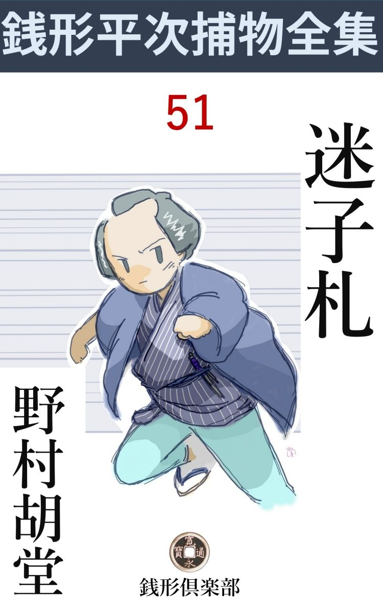
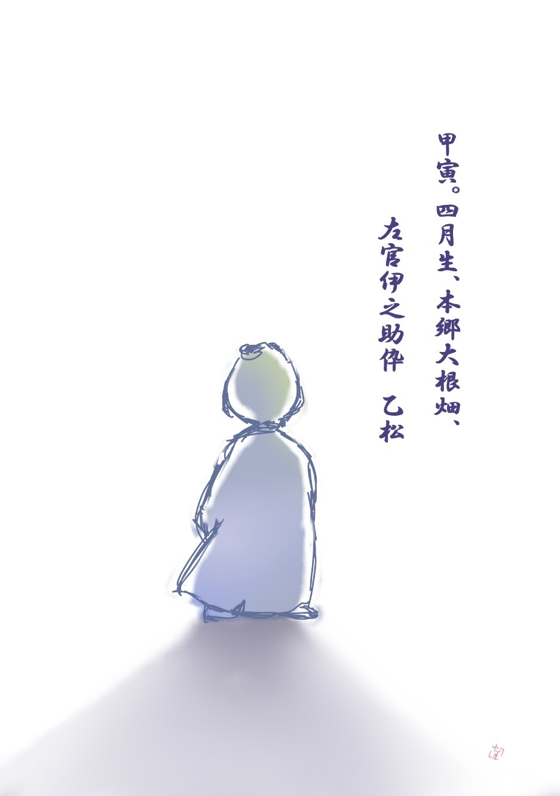

| 迷子札: 銭形平次捕物全集第51話 (銭形倶楽部) | |
| 野村胡堂 | |
| ZENIGATA CLUB (2018) | |

一
「親分、お願いがあるんだが」
ガラッ八の八五郎は言い憎そうに、長い顎 を撫でております。
「又お小遣いだろう、お安い御用みたいだが、たんとはねえよ」
銭形の平次はそう言いながら、立ち上がりました。
「親分、冗談じゃない。又お静さんの着物なんか剥 いじゃ殺生だ。------あわてちゃいけねえ、今日は金が欲しくて来たんじゃありませんよ。金なら小判というものを、うんと持っていますぜ」
八五郎はこんな事を言いながら、泳ぐような手付きをしました。うっかり金の話をすると、お静の髪の物までも曲 げかねない、銭形平次の気性が、八五郎に取っては、嬉しいような悲しいような、まことに変てこなものだったのです。
「馬鹿野郎、お前が膝っ小僧を隠してお辞儀をすると、いつもの事だから、又金の無心と早合点するじゃないか」
「ヘッ、勘弁しておくんなさい------今日は金じゃねえ、ほんの少しばかり、知恵の方を貸して貰いてえんで」
ガラッ八は掌の窪 みで、額をピタリピタリと叩きます。
「何だ。知恵なら改 まるに及ぶものか、小出しの口で間に合うなら、うんと用意してあるよ」
「大きく出たね、親分」
「金じゃ大きな事が言えねえから、ホッとしたところさ。少しは付合っていい心持にさしてくれ」
「親分子分の間柄だ」
「馬鹿ッ、まるで掛合 噺 みたいな事を言やがる、手っ取り早く筋を申し上げな」
「親分の知恵を借りてえというのが、外に待っているんで」
「誰方 だい」
「大根畑の左官の伊之助親方を御存じでしょう」
「うん------知ってるよ、あの酒の好きな、六十年配の」
「その伊之助親方の娘のお北さんなんで」
ガラッ八はそう言いながら、人口に待たしておいた、十八九の娘を招 じ入れました。
「親分さん、お邪魔をいたします。------実は大変なことが出来ましたので、お力を拝借に参りましたが------」
お北はそう言いながら、浅黒いキリリとした顔を挙げました。決して綺麗ではありませんが、気性 者 らしいうちに愛嬌があって地味な木綿の単衣 も、こればかりは娘らしい赤い帯も、言うに言われぬ一種の魅力でした。
「大した手伝いは出来ないが、一体どんな事があったんだ、お北さん」
「他じゃございませんが、私の弟の乙 松 というのが、七日ばかり前から行方 不知 になりました」
「幾つなんで」
「五つになったばかりですが、知恵の遅い方で何にも解りません」
「心当りは捜したんだろうな」
「それはもう、親類から遊び仲間の家まで、私一人で何遍も何遍も捜しましたが、こちらから捜す時はどこへ隠れているのか、少しも解りません」
お北の言葉には、妙に絡 んだところがあります。
「搜さない時は出て来るとでも言うのかい」
「幽霊じゃないかと思いますが」
賢 そうなお北も、そっと後を振り向きました。真昼の明るい家の中には、もとより何の変ったこともあるわけはありません。
「幽霊？」
「ゆうべ、お勝手口の暗がりから、------そっと覗いておりました」
「その弟さんが？」
「え」
「おかしな話だな、本物の弟さんじゃないのか」
「いえ、乙松はあんな様子をしている筈はありません。芝居へ出て来る先 代 萩 の千松のように、袂 の長い絹物の紋付を着て、頭も顔もお稚 児 さんのように綺麗になっていましたが、不思議なことに、袴 の裾はぼけて、足は見えませんでした」
「------」
お北は気性者でも、迷信でこり固まった江戸娘でした。こう言ううちにも、何やら脅 やかされるように襟をかき合せて、ぞっと肩を竦 めます。
「そいつは気の迷いだろう------物は言わなかったかい」
「言いたそうでしたが、何にも言わずに見えなくなってしまいました」
「フーム」
平次もこれだけでは、知恵の小出しを使いようもありません。
「私はもう悲しくなって、いきなり飛出そうとすると、父親が------あれは狐か狸だろう、乙松はあんな様子をしている筈はないから------って無理に引止めました。一体これはどうしたことでしょう、親分さん」
弟思いらしいお北の顔には、言いようもない悲しみと不安がありました。七日の間、相談する相手もなく、何彼と思い悩んだことでしょう。
「お袋さんは？」
「去年の春五十八で亡くなりました。------それから父 さんはお酒ばかり呑んで、乙松が行方不知になっても一向心配をする様子もなく------江戸の真ん中を『迷子の迷子の乙松やい』と鉦 や太鼓で探して歩けるかい、馬鹿馬鹿しい------なんて威張ってばかりおります」
「父 つぁんの伊之助親方は、たしか六十を越した筈だし、お袋さんが五十八で去年亡くなったとすると五つになる子があるのは少し変じゃないか、お北さん」
「拾った子なんです」
「そうか------それで親方は暢気 にしているんだろう」
「でも、私が小さい時なんかとは比 べものにならない程可愛がっていました。今度だって口では強いことを言っても、お酒ばかり呑んでいるところを見ると、心の中では、どんなことを考えているか判りゃしません」
お北の言葉で、次第に事件の輪 郭 が明かになって行くようです。
「その子の本当の親元はどこなんだい」
と平次、これは肝心の問いでした。
「それが解りません。五年前の夏、天神様の門の外で拾って来た------と言って、白羽二重の産衣 に包んで、生れたばかりの赤ん坊を抱いて来ましたが、赤ん坊に付いていたお金は少しばかりではなかった様子で、あちこちの借りなど返したのを、私は子供心に覚えております」
「伊之助親方は知っているだろうな------八、こいつは一向つまらない話らしいぜ、手前 の知恵でも埒 が明きそうだ、やって見るがいい」
平次は黙って聴き入る八五郎を顧 みます。
二
それから二日目、平次が新しい仕事に喰い付いていると、気のない顔をしてガラッ八は、帰って来ました。
「何をニヤニヤしているんだ、乙 松 の行方が解ったのか」
と平次。
「面目ねえが、何にも判りませんよ」
「それが面目のない面 かい」
「これでも精々萎 れているつもりなんだが、どうも可笑 しくてたまらないんで」
「何が可笑しい」
「二日二た晩、伊之助親方と呑んでいたんだが、酒ならいくらでも呑ませるくせに、あの話となるとどうしても口を開かねえ、あんな頑固な爺 は滅多にありませんね、親分」
「放って置くんだな、幽霊退治はもうたくさんだ」
「でもお北坊が可哀想ですよ、母親の亡くなった後は、身一つに引受けて世話をしたんで、泣いてばかりいますよ」
「いやにお北の事となると思いやりがあるんだね」
「冗談でしょう、親分」
そう言いながらもガラッ八が赧 くなったのです。平次はそれを世にも面白そうに眺めやるのでした。
「だって、乙松は殺された様子もなく、肝心の親父が呑んでばかりいるようじゃ、この仕事はお北坊のお守にしかならないよ、俺は御免を蒙 ろう」
「でも親分は、知恵なら貸す筈だったじゃありませんか」
「止しだ、金なら馬に喰わせるほどあるが、今日は知恵が出払ったよ」
「------」
「なア、八、こいつは伊之助親方が承知の上でしている事なんだ。乙松は生みの親の手許に帰って、伊之助は纏 った礼を貰ったのさ、余計な事をするだけ野暮だ。お北坊には可哀想だが、放って置くがいい」
「だって親分」
「多分馴合いの若いのが、親の許さない子を産んでよ、始末に困って捨てたんだろう。後で親が死ぬか何かして、幸い子供の拾い主も判っているから、金をやって取戻したのさ------この筋書に外 れっこはねえよ。詮 索 したところで、戻る子供じゃねえ。それよりは、可愛がってくれる亭主でも搜してよ、早く身を固めるように------とお北に言ってやるがいい。ここにも一人可愛がってくれ手がありそうじゃないか。ネ、八］
「------」
八五郎は少し斜 になって、プイと外へ出てしまいました。この上お北のために、働いてやる工夫のないのが、淋しくも張合いのない様子です。
がそれから三日目、江戸の初夏が次第に薫 ばしくなったころ、お北は顔色変えて飛込んで来ました。
「親分さん、父 さんが、大変」
「どうした、お北さん」
「死んでいるんです」
「何？」
「ゆうべとうとう帰らなかったんで。酔っても外へ泊った事のない人ですが------、不思議に思っていると、今朝格子の中に冷たくなって転げていました」
「卒中 じゃないか」
「いえ、斬られているんです」
「何？ 人手に掛ったのか------そいつは大変ッ」
平次は立上がって支度をしております。
「ね、親分、だから言わないこっちゃねえ」
とガラッ八。
「殺されるのが判りゃ俺は占 いを始めるよ。文句を言わずにお北さんと一足先に行くがいい」
「それでは親分さん」
二人は飛んで行きました。
三
平次はなんとなく苦い心持でした。八五郎へはポンポン言いましたが、せめて三日前に乗出して、伊之助を警戒していたら、命までは奪 られずに済んだかも知れない------といった淡い悔恨がチクチク胸に喰い込むのです。
------よしッ、あの娘のために、一と肌脱いで、敵を討ってやろう------
大根畑の伊之助の家へ着くころまでには、何遍も、何遍も、自分へそう言い聞かせているのでした。
伊之助は少し変り者で、あまり付き合いがなかったものか、この騒ぎの中にも、集まっているのはほんの五六人、叔母のお村が采配を揮 って、どうやらこうやら、遺骸を奥へ移したところです。
奥と言ったところで、たった二た間の狭い家、手習机の上に線香と水を並べて、伊之助の死骸は、その前に転がしたというだけのことです。
「親分さん、この通りの姿になりました。敵を討って下さい」
気性者らしいお北も、急にこの世へたった一人残されたと判ったように、沁 々 と涙をこぼしました。
冠せた半纏 を取ると、後ろから袈裟掛に斬られた伊之助は、たった一刀の下に死んだらしく、蘇芳 を浴びたようになっております。
「凄い手際ですね、親分」
ガラッ八は後ろから首を長くしました。
「裾物斬 の名人だろう。藁束 の気で人間を切りやがる」
平次も何となく暗い心持でした。町方の御川聞の平次には、自分では指もさせないだけに、武家の切捨御免が癪 にさわってたまらなかったのです。
「辻斬りでしょうか」
「いや、------辻斬りが死骸を家まで持って来る筈はない」
「物盗り？」
八五郎は日頃平次に仕込まれた通り、一応常識的な疑いを並べます。そのくせ腹の中には、そんな手軽なものじゃあるまいと言った、直感らしいものが根を張っているのです。
「何にも盗 られた様子はありません。見れば、財布もあるようですし」
涙の隙からお北は言います。
「八、財布の中を見てくれ」
八五郎は紅に染んだ死骸の首から、財布の紐 を外しました。死んだ女房が夜業 に縫ってくれたらしい縞 の財布の中には、青銭が七八枚と、小粒で二分ばかり、それに小判が一枚人っているではありませんか。
「これは迷子札 ですよ、親分」
「親方はもう六十だろう、迷子札は可怪しいぜ、読んで見な」
小判形には出来ていますが、よく見ると真鍮 の迷子札で、
甲寅 。四月生、本郷大根畑、左官伊之助伜 乙松
と二行に書いて、その下に十二支 の寅が彫ってあります。
「父 さんの迷子札じゃねえ、こいつは行方不明の乙松のだ」
「何？ 乙松の迷子札？ ------やはり子供は承知の上で返したんだね」

平次の言うのは尤 もでした。行方不明の子供の迷子札が、親の財布へ入っているのは、そうでも考えなければテニヲハが合いません。
「親分さん、それは、ゆうべ私が入れてやったんですよ」
お北は変な事を言い出しました。
「何？ そいつは話が違って来るぜ。父 さんの財布へ五つになる伜の迷子札を入れたのは、何か呪 禁 にでもなるのかい」
「いえ、父 さんが入用なことがあるから、乙松の迷子札を出せって、手箱から私に出さして、財布へ入れて出かけたんです」
「どこへ行ったんだ」
「半刻経たないうちに帰ってくる、銅壺 の湯を熱くして置け------って」
お北はその時の事を思い出したらしく、乂新しい涙に濡れます。
「近いな」
平次は独り言のように言って、それからいろいろと調べましたが、その他はなんの手掛りもありません。
叔母のお村は四十七八、伊之助には義理の妹で、お北の知っているほども、事情を知らず、家の中は出来るだけ搜して見ましたが、文 盲 な伊之助は、書いた物というと、毛虫よりも嫌いだったらしく、大神宮様の御札と、仏様の戒名 より外には、何にもありません。
「捨てられた時着ていたという、白羽二重の産衣 は？」
平次に取っては、これが最後の手掛りでした。
「その後は見たこともありません、多分------」
お北は涙を押えて、淋しく頬を歪 めました。何もかも酒に代える癖のあった伊之助か、多分売るか流すかしたことでしょう。
「こうなると五年の月日は短いようで長いな、証拠らしいものは一つも残らない」
四
その日のうちに、鼻の良い八五郎は、伊之助の家を中心に、十町四方の匂いを嗅ぎ廻りました。お北の様子を見ていると、こうでもしてやらずにはいられなかったのです。
「親分------いいことを聞き出しました」
「何だい」
八五郎が神田へ帰ったのは、もう夕暮れでした。
「伊之助があの晩家から出ると直ぐ、近所の居酒屋へ飛込んで、一杯引っかけながら、これから金儲けに行くんだ------って言ったそうですよ」
「博奕 じゃあるまいな」
「酒は好きだが、勝負事は嫌いだったそうで、多分大きな仕事でも請 負 って、手金が入 る話だろう、って居酒屋の爺 は言ってましたが」
「仕事の請負に、迷子札を持出す奴はないよ。八、こいつは面白くなって来たぜ」
「ヘエ」
八五郎は無関心ですが、平次の態度は急に活気づいて来ました。
「俺はだんだん判って来るような気がする。伊之助は悪い男じゃないが、酒が好きで、仕事が嫌いだから、五年前捨児に付いていた金を呑んだ上、かなりの借金が出来たんだろう。こんど又乙松を親の手へ返して、纏 った礼を貰ったらしいが、借金を返すといくらも残らない------死骸の財布に二分しきゃなかった------でもう少し金を欲しいと思う矢先、フト思い付いたのは迷子札さ」
「------」
「あれを持出されると困る筋があるのを承知で、乙松の本当の親へ強請 に行ったんだろう------再々の事で、向うでも愛想 を尽かし、いい加減に宥 めて帰して------後を跟 けてバッサリやった。が、憎くて殺したわけじゃない、それに、五年も子供を育てて貰った恩があるから、死骸だけでも持って来て、入口から投り込んで行ったんだろう」
「見て来たようだね、親分」
「物事はこう組み立てて考えるのが一番手っ取り早く解るよ」
平次の異常な想像力は、その鋭い理智を援 けて、これまでも、どんなに難事件をといたか解りません。
「それだけ解りゃ、相手が突き留められそうなものじゃありませんか、親分」
「もう一と息だよ------お前御苦労だが、伊之助の出入りしているお邸で、五年前にお産のあった家を探してくれ。白羽二重の産衣 を用意する位だから、御目見得以上の武家だ」
平次は一歩解決へ踏込みます。
「でも、捨児 だって言うじゃありませんか。捨児を拾ったのなら、出入りのお屋敷とは限りませんぜ」
「大嘘だよ------捨児とでも言っておかなきゃア、世間の口がうるさかったのさ。迷子札を持って、半 刻 で強 請 って帰れるなら、出入りのお屋敷に決っている」
「成程ね------序 に斬られた場所も解るといいが------血糊はこぼれちゃいませんか」
「そいつは考えない方がいい、多分屋敷の中でやられたろう」
八五郎は飛んで行きましたが、得意の耳と鼻を働かせて、二刻ばかり経つと、揚々と帰って来ました。後ろにはお北が従 いております。
「親分、判りましたよ」
「おそろしく早いじゃないか」
「お北さんが万事心得てましたよ」
「成程ね」
ちょいと、からかって見ようと思いましたが、若い娘の口を重くするでもないと思って、喉 まで出た洒落を呑込みます。
「親分さん------父 さんの出入りの御屋敷で御目見得以上というと、三軒しかありません。一軒は金助町の園山若 狭 様、一軒は御 徒 町の古田一学様、あとの一軒は同朋町 の篠塚三郎右衛門様」
お北は父の代りに帳面をやっていたので、よく知っております。
「その中で五年前にお産のあった家は？」
「八五郎さんでは、外の事と違って聞出し憎かろうと思って私が一緒に歩きました。中で御徒町の吉田様の御嬢様百枝 様と仰っしゃる方が、その頃初の御産で、嫁入り先から帰って、御里で御産みになりましたそうです」
「取上げたのは？」
「黒門町のお元さん------それも行って聞きましたが、肝 心 のお元さんは三年前に亡くなって、今は娘のお延さんが家業を継いでやっています。何にも知らないけれども、吉田様のお嬢様なら六年前に、金助町の園山若狭様に縁付き、その翌る年御里方へ帰って若様を産み、今でもお二人共お達者で暮していらっしゃるそうですよ」
お北の説明はハキハキしております。が、それだけの事情はよく判っても、それが乙松の失 踪 や、伊之助の殺された事と、何の関係があるか、容易に見当も付きません。
「吉田一学様のところで、生れた赤ん坊を入れ換えたんじゃありませんか。何かわけがあって、娘の産んだ子を伊之助に育てさせ、他の子を産んだ事にして、園山若狭様の跡取りにしたといった筋書は狂言 になりますぜ」
ガラッ八は一世一代の知恵を絞ります。
「狂言にはなるが、本当らしくないな------五年経って、元の子を取戻したのがわからねえ］
「真っ向から当って見ましょうか」
「俺もそれを考えているんだ、危い橋を渡って見るか」
「危い橋？」
「強請 に行くんだよ、一つ間違えば伊之助親方の二の舞いだが」
平次は何を思い立ったか、淋しく笑います。
五
「御免下さいまし」
「誰じゃ」
御徒町の吉田一学、御徒士 頭 で一千石を食 む大身ですが、平次はその御勝手口へ、遠慮もなく入って行ったのです。
「御用人様に御目に掛りとう御座いますが」
「お前は何だ」
「左官の伊之助の弟------え、その、平次と申す者で」
「もう遅いぞ、明日出直して参れ」
お勝手にいる爺仁 は、恐ろしく威猛高 です。
「そう仰っしゃらずに、ちょいとお取次を願います。御用人様は、きっと御逢い下さいます」
「いやな奴だな、ここを何と心得る」
「ヘエ、吉田様のお勝手口で」
どうもこの押し問答は平次の勝ちです。
やがて通されたのは、内玄関の突当りの小部屋。
「私は用人の後 閑 武兵衛 じゃが------平次というのはお前か」
六十年配の穏やかな仁体です。
「ヘエ、私は左官の伊之助の弟で御座いますが、兄の遺 言 で、今晩お伺いいたしました］
「遺言？」
老川人は一寸眼を見張りました。
「兄の伊之助が心掛けて果たし兼ねましたが、一つ見て頂きたいものがございます------なアに、つまらない迷子札で、ヘエ」
平次がそう言いながら、懐 から取出したのは、真鍮 の迷子札が一枚、後 閑 武兵衛の手の届きそうもないところへ置いて、上眼使いに、そっと見上げるのでした。
色の浅黒い、苦み走った男振りも、わざと狭く着た単衣 もすっかり板に付いて、名優の強請 場 に見るような、一種抜き差しのならぬ凄味さえ加わります。
「それをどうしようと言うのだ」
「へ、へ、へ、この迷子札に書いてある、甲寅 四月生れの乙松という伜を引渡して頂きたいんで、ただそれだけの事で御座いますよ、御用人様」
「------」
「どんなもんで御座いましょう」
「暫らく待ってくれ」
拱 いた腕をほどくと、後閑武兵衛、深沈たる顔をして奥に引込みました。
待つこと暫時 。
どこから槍が来るか、どこから鉄砲が来るか、それは全く不安極まる四半刻でしたが、平次は小判形の迷子札と睨めっこをしたまま、大した用心をするでもなく控 えております。
「大層待たせたな」
二度目に出て来た時の用人は、何となくニコニコしておりました。
「どういたしまして、どうせ夜が明けるか、斬られて死骸だけ帰るか------それ位の覚悟はいたして参りました」
と平次。
「大層いさぎよい事だが、左様な心配はあるまい------ところで、その迷子札じゃ。私の一存で、この場で買い取ろうと思う、どうじゃ、これ位では」
出したのは二十五両包の小判が四つ。
「------」
「不足かな」
「------」
「これっきり忘れてくれるなら、この倍出してもよいが」
武兵衛はこの取引の成功を疑 ってもいない様子です。
「御用人様、私は金が欲しくて参ったのじゃ御座いません」
「何だと」
平次の言葉の予想 外 さ。
「百両二百両はおろか、千両箱を積んでもこの迷子札は売りゃしません------乙松という伜を頂戴して、兄伊之助の後を立てさえすれば、それでよいので」
「それは言い掛りと言うものだろう、平次とやら」
「------」
「私に免じて、我慢をしてくれぬか、この通り」
後閑武兵衛は畳へ手を落すのでした。
「それじゃ、一日考えさして下さいまし。姪 のお北とも相談をして、明日の晩又参りましょう」
平次は目的が達した様子でした。迷子札を懐へ入れると、丁寧に暇 を告げて、用心深く屋敷の外へ出ました。
六
翌る日一日、平次はガラッ八を鞭撻 して、吉田一学の屋敷と、一学の娘百枝 の嫁入り先、金助町の園山若 狭 の屋敷を探らせました。
「園山若狭様は一千五百石の大身だ。殿様は御病身で、世捨人も同様だというが、あの弟の勇三郎というのがうるさい。うっかり町方の御用聞が入ったと判ると、どんな眼に逢わされるかも知れないよ、用心するがいい」
「大丈夫ですよ、親分」
ガラッ八は探りにかけては名人でした。とぼけた顔と、早い耳とを働かせて、何時も平次が及ばぬところまで探りを入れます。
「俺はもういちど吉田一学様の屋敷を、外から探って見る」
二人は手分けをして、それから丸一日の活躍を続けたのです。
日が暮れると、神田の平次の家へ、平次も八五郎も引揚げて来ました。お北は事件の成行を心配して家を叔母のお村に頼んだまま、昼からここで待っております。
「親分、ひどい眼に逢いましたぜ」
ガラッ八は余っ程驚かされた様子で、報告も忘れてこんな事を言うのでした。
「殿様の弟の勇三郎に見付かったろう」
「いえ、------あれは猫の子のような人間で、屋敷の中へ紛 れ込んだあっしを見付けても、ニヤリニヤリしていましたが、怖いのは用人の石沢左仲 で、いきなり刀を抜いて追っかけるじゃありませんか、いや逃げたの逃げねえの」
「ハッハッ、そいつはよかった」
「よかアありませんよ。あんな無法な人間をあっし は見た事もない------玄関側から、木戸を押して、奥庭へ入りかけると、いきなり、コラッピカリと来るじゃありませんか。コラッは呶 鳴 ったんで、ピカリは引っこ抜きですよ」
「註 を入れるには及ばない------で、様子は解ったかい」
「解るの解らねえのって、憚 りながら、殿様の夜具の柄から、お女中達の昼のお菜まで判りましたよ」
「そんな事はどうでもいい」
「ところが、それが大切 なんで------殿様は三年越の御病気、少々気が変だということですが、とにかく寝たっきり、奥方の百枝様はまだ若いし、若様の鶴松様は五つ、家の中は、ニヤリニヤリの勇三郎------こいつは殿様の弟で、三十二三のちょいと好い男だ------それと癇癪持 の用人、石沢左仲の二人が切り盛りしています」
「------」
「ところが、十二三日前、若様の鶴松様が、晩の御食事の後で急に腹痛を起し、一度は引付けなすったが、金助町では手が届かないと言うので、曉方用人の左仲がお伴をして、お里方へ伴れて行った。今では御 徒 町の吉田一学様のところにいるが、奥方は毎日見舞い、弟の勇三郎も時々見舞っているが、いい塩梅に持ち直して、二三日でけろりと治 り、今では元の身体になったということですよ」
八五郎の報告はざっとこの通りでした。
「その鶴松という坊ちゃんは、以前と少しも変らないのか」
「弟の勇三郎が言うんだから、ウソはないでしょう」
「頭も、物言いも------」
「多分そんな事でしょう」
八五郎の話はこれで全部です。
「親分の方はどうでした」
「俺の方は散々の体 さ。園山の坊ちゃんが、来て泊っていることは判ったが、あとはなんにも判らねえ」
「ヘエ------」
ガラッ八は少し呆気に取られた形でした。聞き込みにかけては、親分の平次もガラッ八の足元にも及ばなかったのです。
「でも、それで見当だけはついたよ。今晩こそ、お北さんの敵を討ってやるよ」
「------」
どんな成算が平次にあるのでしょう。
七
その晩亥刻 過ぎ、平次は約束通り、御徒町の吉田一学屋敷へ、お北と一緒に出向きました。
「平次、迷子札はどうした。------いろいろ相談をした上、三百両に引取りたいと思うが、どうだ」
後 閑 武兵衛は老巧な調子で話の緒 を開きました。
今晩は打って変って奥の広い部屋へ通した上、隣の部屋には二三人の人がいるらしく、何となく改まった空気です。
「御用人様------いろいろ考えましたが、どうも金ずくでお渡しは相成り兼ねます」
「フーム」
「兄伊之助が心に掛けた伜乙松を御渡し下さるか------」
「左様な者は一向知らぬと申したではないか」
「では、御当家に御泊りの園山様若様、鶴松様に、この北と申す姪 が御目通りいたしたいと申します。それを御 叶 え下されば、迷子札は相違なく差上げますが」
平次は畳に両手を突いて、ピタと話を進めました。明るい灯、広々とした部屋、それを四方から圧 する空気も唯事ではありません。
「これこれ左様な馬鹿な事を申してはならぬ。鶴松様はもう御休みじゃ」
「では致し方が御座いません、このまま引取ることにいたします」
平次は一歩も引く色はなかったのです。
「平次」
「ハイ」
「物事は程を越してはならぬぞ」
「存じております」
「致し方もないことじゃ」
後閑武兵衛が手を上げると、それが合図だったものか、
「------」
後の襖 がさっと開いて、四十五六の武家が一人、襷 を十文字に綾 取 り、六尺柄 皆 朱 の手槍をピタリと付けて、ズイと平次の方に寄ります．
「平次、覚悟せい」
凄まじい殺気、寸毫 のたるみもないのは、ここで二人を音も立てさせずに成敗するつもりでしょう。
「お、石沢左仲様」
「存じておるか」
「そう来るだろうと思ったよ」
「何を言う」
一方からは後閑武兵衛、これは羽織だけ脱いで、一刀を引抜き、逃げ路を塞 いだまま、粛然 と立っております。
「これ位の事が解らなくて飛込めると思うか、いや、御両人、御苦労千万な事だ」
平次は後ろにお北を庇 って、身体を斜に構えました。右手にもう得意の投げ銭が、いつでも飛ばせるように握られていたのです。
「無礼だろう。身の程も顧 みず、御直参の大身へ強請 がましい事を言って来るとは、何事じゃ。この上は迷子札を出そうとも勘弁はならぬ、観念せい」
石沢左仲の槍先は、灯にキラリと反映しながら、ともすれば平次の胸板を狙うのでした。
「御冗談でしょう。そんなものに刺されてたまるものか------ね、御両人、よっく聞いて貰いましょう。話は五年前だ。御当家から園山様へ縁付かれた百枝 様が、御里の御当家に帰って双 生 子 を御生みになった」
「えッ」
平次の言葉は、二人の用人を仰天させました。
「世にいう畜生 腹 、これが縁家先に知れると、離縁になろうも知れぬ。御用人の取計らいで、その内の一人鶴松君を若様とし、もう一人乙松様を、手当をして出入りの左官伊之助に貰わせ、一生音信不通の約束をした。------ところが」
平次がここまで説き進むと、
「黙れ、その方如きの知った事ではないぞッ」
石沢左仲の槍は、ともすれば平次の口を封 じようとするのです。
「どっこい待った。あっし を殺せば、門口に様子を見ている子分の者が十六人、一手は園山様の勇三郎様に駈付け、一手は龍の口御評定所に飛込み、御目付へ訴えることになっているぞ。証拠は迷子札------いやまだまだ沢山ある。吉田、園山両家は、七日経たないうちに取潰される------どうだ御両人」
「------」
平次の言葉は、石沢左仲の癇癪 を封ずるに充分でした。
「話はそれから五年目だ------手っ取り早く言えば、園山家の冷 飯 食い勇三郎が、兄上は病弱、鶴松君を亡きものにすれば、間違いもなく園山家の家 督 に直れると思い込んで、鶴松君に毒を盛った」
石沢、後閑両用人の顔色の凄まじさ。
八
平次はなおも、刃 の中に説き進みます。
「鶴松君はその場で死んだが、奥方と御用人は重態と言い触 して、御里方に遺骸を運び、五年前から伊之助の子になって育っている乙松を、伊之助から取上げ、お顔が瓜二つというほど似てるのを幸い、鶴松君御 恢 復 と言いふらしたが、言葉や行儀が直るまで、なお、お屋敷に留め置かれた」
「------」
「乙松様が、伊之助とお北を恋しがってむずかるので、夜中連れ出して、大根畑の伊之助の家を覗かせたこともある。が、その後伊之助はもう少し金が欲しくなり、残して置いた迷子札を持って、強請 がましく御当家へ来たのを、後の禍 を絶つため、後 閑 様が手に掛けた、それとも、石沢様かな」
「------」
平次の明智は、一毫 の曇りもありません。何から何まで、推理の上に築いた想像ですが、それが抜き差しならぬ現実となって、二人の用人の胆 を奪ったのです。
「さア、どうしてくれるんだ。このお北には親の敵、名乗って尋常に勝負と言いたいところだが、せめて詫 言 の一つも言う気になったらどんなものだ」
平次の追及の益々猛烈なのを聞くと、後閑武兵衛は刀を納めました。
「平次とやら、一々尤 も------その方の申すことは道理だ。金ずくで済まそうと思った私の浅 薄 さを勘弁してくれ」
「------」
「この一埒 は、私と石沢殿との考えたことで、殿様も奥方も御存じないことだ------両家の大事には代え難かった。許してくれ」
「後閑様、そう仰っしゃるとお気の毒ですが、御大身の直参も御家が大事なら、左官の伊之助も自分の家や命が大事じゃございませんか」
「------」
「まして五年越し若様を養育した上、虫のように殺されちゃ浮び切れません。娘のお北の心持は一体どうしてくれるんで」
「相済まぬ」
「相済まぬ------で親を殺された者の心持は済むでしょうか。御用人、人間の命には、大名も職人も変りはありませんよ」
「------」
「龍の口へ訴え出ると申したのは、決して脅 かしじゃありません。あんまり没 義 道 なことをされると、町人風情もツイそんな心持になるじゃございませんか」
平次は少しも責手 をゆるめません。
「平次とやら、その方の言葉は一々胸に徹 えたぞ------何を隠そう、腹黒い勇三郎様に、御家督を継がせる心外さに、これは皆なこの石沢左仲のした事だ。伊之助の帰途 を追っかけて、斬って捨てたのもこの私だ。後閑氏ではない」
石沢左仲、手槍を投捨てると、畳の上にどっかと坐りました。癇癪 持だけに、生一本で正直者で、思いつめると待て暫しがありません。
「石沢氏」
驚いたのは後閑武兵衛でした。
「いかにもお北に討たれてやろう。命は塵 ほども惜しくないが------平次、これだけを聞いてくれ。大身の武家も左官の家も変りがないと言っても、家来の私から言えば、主家を潰 すわけには行かぬ」
「------」
「勇三郎は侫奸 邪智 で、甥 の鶴松君まで毒害した。それを知って園山の家督に直しては、用人の私が御祖先に相済まぬ------長い事は言わぬ、たった一年、いやひと月待ってくれ。勇三郎様の悪事を発 き、詰 腹 を切らせて、園山家を泰山の安きに置き、百枝 様、乙松様を金助町にお迎え申し上げた上、改めて名乗って出て、縛り首なり、なぶり殺しなり、どうでも勝手になってやる」
石沢左仲の言葉は、一つ一つ血の涙のようでした。いつの間にやら正面の襖が開いて、園山家の百枝が、鶴松になりすました乙松を抱いて、これも涙にひたりながら見ているのでした。
「親分さん、引揚げましょう------父 さんも悪かったんですから」
お北も泣いておりました。勝気でも確 り者でも、武士の義理堅さには、さすがに打たれた様子です。
「よしよし、お北さんがそう言うなら、あっし は事を好むわけじゃねえ。忠義な人達に免 じて今晩は帰るとしよう------その代り、このお北を、金助町のお屋敷へ引取って、若様のお側へ置いてやって下さい」
「それはもう、言うまでもない、お北とやらここへ来るがよい」
美しく気高い百枝がさし招くと、お北はもう、前後も忘れて、乙松の側へ飛んで行きました。
「乙 や、逢いたかったよ」
「姉や、よく来てくれたね」
抱き合う二人、言葉とがめするのも忘れて、百枝はほほ笑ましく眺めやるのでした。
× ×
「親分、敵は討ったんですか」
大むくれのガラッ八に迎えられて、
「討 ちかねたよ。見事に返 り討 さ、武家は苦手だ。町方の岡っ引なんか手を出すものじゃねえ」
平次は苦笑しております。
（編注）
作品中には、身体の障害や人権にかかわる、差別的な語句や表現が見られますが、本書が成立した当時の時代背景等が現代とは異なる古典的な文学作品でもあり、著者が故人でもありますので、底本のままとしました。ご理解、ご諒承のほどをお願い申し上げます。
著者---野村胡堂
挿絵---萩 柚月 © 2017
初出---「オール讀物」昭和十一年五月号 文藝春秋社
底本---「錢形平次捕物全集」第三巻 河出書房 昭和三十一年六月十五日初版
編集・発行 銭形倶楽部